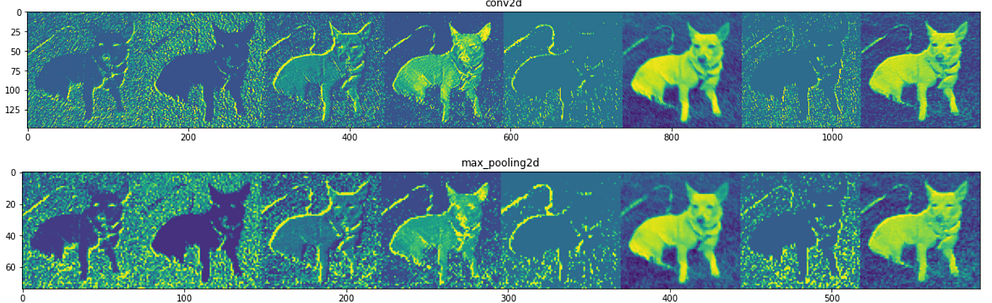

To improve accuracy, models began implementing multiple levels of convolution using differently weighted kernels. These feature maps each attempt to detect a specific feature and build off of each other into more abstract concepts. While a early feature may still only detect edges and corners, future layers may use that information to detect a body, and then a face and eyes off of the body.
This stacked feature heirarchy can be expanded on to add more functionality to these models. Once a model can tell that a body is in the picture, it can also attempt to track that bodies movement by generating and tracking landmarks on the body.
